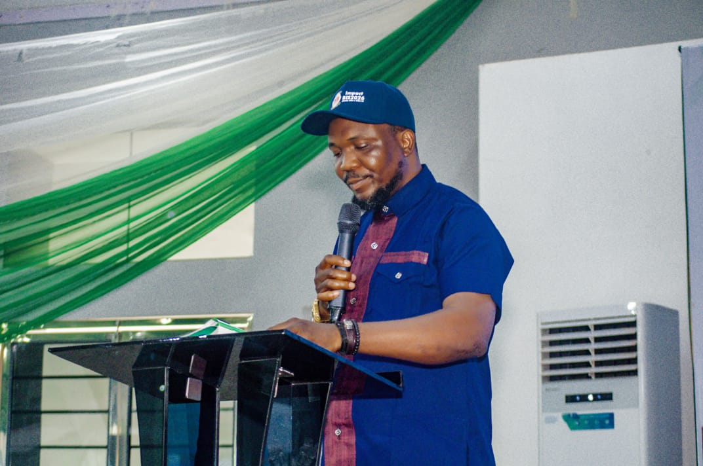

Our purpose
Learn. Innovate.
Build. Connect. Thrive.
IYDI creates an enabling platform where young people and women can learn, innovate, build, connect and thrive.
About IYDI
A Nigerian development organization with young people and women at the heart of its work.
Who we are
Impact Youth Development Initiative (IYDI) is committed to empowering young people and women to become productive, innovative, responsible and active contributors to sustainable community and national development.
Our focus connects skills, entrepreneurship, innovation, leadership, mentorship and opportunities. Across nine programme areas, we place people and their potential at the centre of development.
Our purpose
IYDI creates an enabling platform where young people and women can learn, innovate, build, connect and thrive.
Our aim
To empower young people and women with knowledge, skills, opportunities, networks and resources for economic independence, responsible citizenship, leadership and sustainable livelihoods.
Our vision
To build an inclusive and prosperous society where young people and women are empowered, economically independent, innovative, responsible, and actively contributing to sustainable development.
Our mission
To empower young people and women through capacity development, entrepreneurship, innovation, education, mentorship, advocacy, partnerships, and access to opportunities, enabling them to build sustainable livelihoods and become active contributors to social and economic development.
Our objectives
The objectives below reflect IYDI’s stated areas of focus.
Build knowledge, confidence and practical capacity so young people can participate productively in society.
Support business ideas, enterprise development and pathways to sustainable livelihoods.
Encourage innovative thinking and access to technology that helps people create and grow.
Expand opportunities, skills and resources for women and women-led enterprises.
Connect learning and practical training with employability and economic independence.
Develop ethical leaders and encourage active, responsible participation in community life.
Enable people to contribute to inclusive, sustainable development in their communities.
Encourage dialogue, cooperation and peaceful relationships across communities.
Reduce vulnerability to harmful behaviours through education, mentorship and positive opportunities.
Use learning and advocacy to support informed engagement on youth and women’s development.
Connect institutions, businesses and development partners around shared empowerment goals.
Connect emerging enterprises with investors, markets and opportunities for growth.
Provide continued guidance and engagement that helps beneficiaries sustain their progress.
Our core values
Honesty, accountability and responsible action.
Meaningful contributions to people and communities.
Opportunity and participation for young people and women.
New ideas and creative responses to challenges.
Quality, continuous learning and purposeful work.
Shared progress through relationships and partnerships.
Knowledge, confidence and the capacity to act.
Lasting livelihoods and resilient communities.
Our long-term aspiration
IYDI aspires to become a leading African platform for youth and women empowerment, entrepreneurship, innovation, leadership development and community transformation.
Meet the President
President, Impact Youth Development Initiative

Official profile
Ejike Celestine Nnaji is a Nigerian social entrepreneur, business leader, youth development advocate, community development practitioner, and strategic communications professional with experience spanning entrepreneurship, public-sector engagement, student leadership, advocacy, strategic communication, and organisational development.
He is the Chief Executive Officer of Celvia Konsept Ltd, President of Impact Youth Development Initiative (IYDI), and Convener of the Impact Business Innovation Summit, a platform focused on entrepreneurship, innovation, skills development, mentorship, investment opportunities, women empowerment, and inclusive economic development.
Nnaji has held several leadership and public-sector positions, including Technical Assistant to His Excellency, Rt. Hon. Ifeanyi Lawrence Ugwuanyi, former Governor of Enugu State; Former National President of the National Union of Nkanu Students; and Former Public Relations Officer (PRO) of the National Association of Nigerian Students (NANS).
He also served as Chief Press Secretary to the Chairman of ALGON, Enugu State Chapter; Chairman, ALGON South-East; and Deputy National Publicity Secretary, ALGON, where he gained extensive experience in strategic communications, media relations, stakeholder engagement, public information, and institutional advocacy.
Through his leadership of IYDI and the Impact Business Innovation Summit, Nnaji continues to champion practical opportunities for young people and women by connecting them with skills, entrepreneurship, mentorship, innovation, partnerships, investment, and capacity-building opportunities.
His leadership philosophy is anchored on service, integrity, innovation, empowerment, collaboration, and measurable impact. He is committed to building sustainable platforms and partnerships that empower young Nigerians to become entrepreneurs, innovators, leaders, employers, and active contributors to community and national development.
Core areas
Opportunity starts with connection
Explore IYDI’s programmes and connect with the organization.